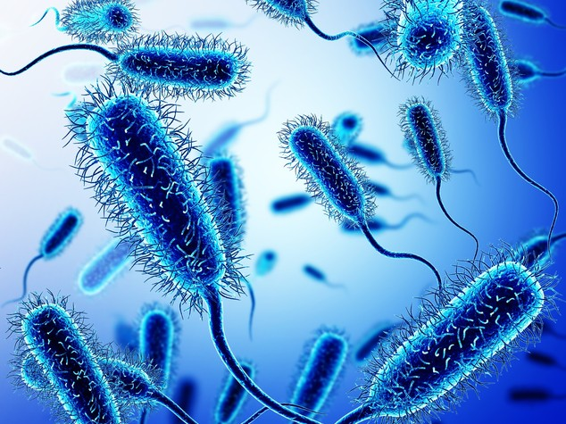
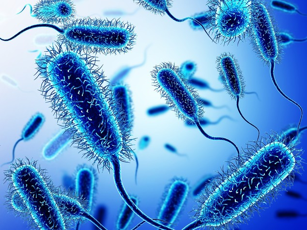
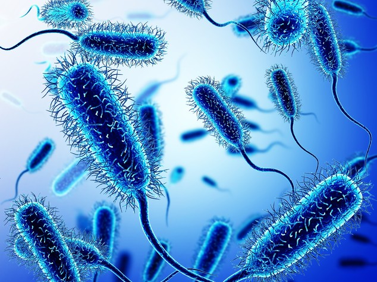

da WIKI ISG, l'enciclopedia libera dell'Istituto San Giuseppe
I batteri sono microscopici organismi unicellulari procarioti. Per la loro grande varietà di adattamenti, sono gli esseri viventi più numerosi della Terra. Si riproducono tramite la scissione binaria ogni 15-45 minuti. Come in tutte le cellule procarioti, in quelle dei batteri non vi è un nucleo distinto e delimitato da una membrana; il DNA è libero nel Citoplasma.
Il metabolismo è l'insieme di tutte le reazioni che si verificano nell'organismo, dall'introduzione del cibo all'eliminazione dei rifiuti. Parte di quanto assimilato è convertito in nuova materia che rinnova quella demolita e usurata e un'altra parte viene trasformata in energia (metabolismo energetico).
Le reazioni chimiche che avvengono negli organismi richiedono o rilasciano energia,
intesa come capacita' di compiere lavoro. Gli esseri viventi ricavano dall'ambiente
l'energia necessaria per crescere, riprodursi, reagire agli stimoli, muoversi, riparare i
danni cellulari, percio' le cellule la impiegano per la sintesi biochimica (lavoro chimico),
il trasporto all'interno o all'esterno della cellula delle sostanze necessarie
(lavoro di trasporto), spostamento degli organelli o della cellula stessa, contrazione
muscolare (lavoro meccanico), lavoro elettrico ed energia luminosa (ad esempio nelle lucciole).
Gli organismi autotrofi, come le piante e alcuni batteri sfruttano
l'energia del Sole per sintetizzare composti organici a partire da materia inorganica.
Gli organismi eterotrofi
recuperano dall'ambiente le sostanze organiche gia' prodotte e da esse ricavano energia.
Si parla di catabolismo quando le macromolecole biologiche sono demolite in molecole
più semplici con liberazione di energia, ottenuta rimuovendo atomi
di Idrogeno ed elettroni dal substrato (reazioni esoergoniche).
L'anabolismo, invece, consiste nella sintesi di composti organici complessi a partire da molecole semplici
con impiego di energia fornita dagli elettroni che si aggiungono al substrato
(reazioni endoergoniche).
I due gruppi di reazioni coesistono in tutti i viventi. Durante la crescita
dell'individuo prevalgono le reazioni anaboliche su quelle cataboliche per
consentire l'aumento della massa corporea. Queste pero' continuano anche nell'adulto
per sostituire le parti danneggiate. Da notare che le reazioni anaboliche sono quasi
sempre anatomicamente separate da quelle cataboliche. La cellula batterica è procariote.
Presenta una membrana esterna sottile, avvolta da una parete cellulare, più consistente.
Attorno ad essa, alcuni batteri possiedono un'ulteriore capsula, che li protegge
dagli organismi e dall'attacco dei farmaci. All'interno, nel Citoplasma, è presente un
unico cromosoma e alcune granulazioni, dette
ribosomi. Alcuni batteri possiedono delle espansioni filiforme esterne,
peli e flagelli, con funzioni soprattutto motorie. Qui un ulteriore approfondimento.

Le Monere sono microscopici organismi unicellulari procarioti. Le loro
dimensioni vanno fino a 2 micron per il diametro e 100 micron di lunghezza:sono quindi
più grandi dei virus, ma molto più piccoli delle cellule eucarioti.
La maggior parte dei batteri è eterotrofa, ovvero consuma sostanze
prodotte da altri organismi. I batteri eterotrofi si dividono in tre gruppi:
Decompositori o Saprofiti: si nutrono di organismi vegetali e animali morti
Simbionti: vivono in associazione con altri organismi avendo un vantaggio
reciproco, ovvero vivono in simbiosi. Per esempio ci sono dei batteri che vivono nel
nostro intestino e formano
la Flora Batterica, quindi sono indispensabili per la digestione e per produrre
vitamine. Ci sono anche batteri simbionti che sono indispensabili per la vita sulla Terra
chiamati azotofissatori
che usano l'azoto dell'atmosfera per costruire sostanze organiche come le proteine:
un esempio di questi batteri sono quelli che vivono nelle radici di alcune piante come
i legumi formando rigonfiamenti detti noduli radicali.
Parassiti: vivono a spese di un altro organismo vivente che è
considerato ospite e che viene danneggiato. Alcuni di questi sono
patogeni ovvero
provocano gravi malattie che si possono curare solo con gli antibiotici.
Tra gli organismi terrestri, gli Archeobatterisono quelli che assomigliano di più ai primi esseri comparsi sulla Terra. Gli scienziati dicono questo perchè lo deducono da alcune caratteristiche:
Unicellulari procarioti: tutti gli esseri unicellulari sono formati da una cellula Procariote, una cellula dove il DNA è libero nel citoplasma, una sostanza gelatinosa in cui sono immersi gli organuli.
Vivono in ambienti estremi: in ambienti caldi come il deserto, in ambienti glaciali e in ambienti umidi come le paludi.
Sono esseri autotrofi
Producono gas metano, utilizzano anidride carbonica e idrogeno
Sebbene siano presenti in ambienti più ospitali, gli Archeobatteri sono gli abitanti dei luoghi più estremi e inospitali della Terra. I batteri termofili, ad esempio, si possono sviluppare a temperature superiori ai 100°C.
Gli Eubatteri sono considerati i "veri" batteri; essi sono:
unicellulari procarioti;
invisibili ad occhio nudo;
Gli Eubatteri sono muniti di un rivestimento, la parete batterica e hanno anche una piccola e sottile capsula; sono inoltre sprovvisti di un nucleo e di cromosomi.
Questi batteri possono essere statici o muoversi nell’ambiente in cui vivono: si muovono grazie a delle ciglia o flagelli. Gli Eubatteri si riproducono attraverso un meccanismo che è chiamato scissione binaria. Essi hanno anche forme diverse:
Louis Pasteur, è stato un chimico e microbiologo francese.
Grazie alle sue scoperte e alla sua attività di ricerca è universalmente considerato
il fondatore della moderna microbiologia.
Ha inoltre operato nel campo della chimica, e di lui si ricorda la
teoria sull'enantiomeria dei cristalli. Occasionalmente si occupò anche di fisica.
Louis Pasteur nasce in una cittadina a nord di Lione (Dole), il 27 dicembre del 1822.
Il suo percorso di studi inizia nella piccola Arbois e si conclude alla Scuola Normale
Superiore di Parigi, dove Pasteur consegue il dottorato di ricerca con due tesi, in
chimica ed in fisica, sulla cristallografia.
Diviene quindi professore di chimica all’università di Strasburgo, ma ottiene presto un
permesso per allontanarsi dall’ambito accademico e dedicarsi agli studi sulla
cristallografia e sulla fermentazione.Gli studi di Pasteur furono determinanti
anche in campo medico: egli studiò infatti malattie come
l’antrace e la
rabbia, sviluppando il vaccino per
entrambe.
È importante inoltre ricordare le ricerche eseguite da Pasteur sulle malattie
dei bachi da seta iniziate nel 1865, Il 17 novembre 1873 affermò che l'alterazione
della birra era dovuta alla presenza interna di organismi estranei.
In quegli anni furono importanti anche le sue considerazioni sull'asepsi
e l'antisepsi
nel ramo della chirurgia. Negli ultimi quindici anni di vita, dal 1880 al 1895,
si dedicò allo studio del colera e del
Carbonchio negli animali da allevamento e del virus della Rabbia nei
cani e nell'uomo.
 
